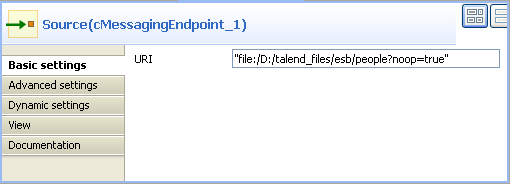
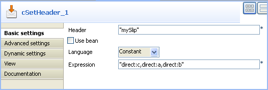
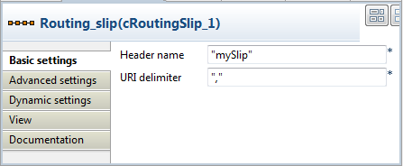
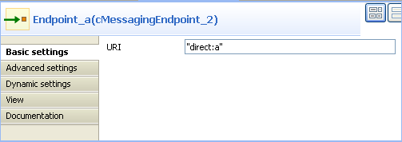
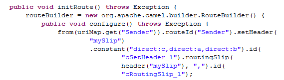
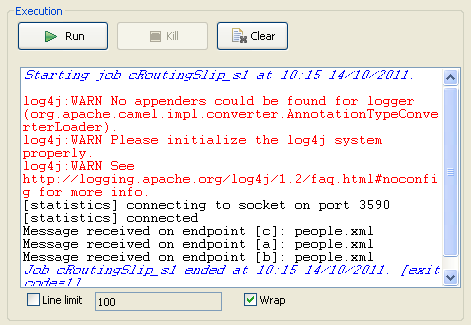
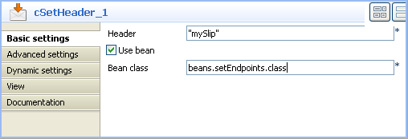
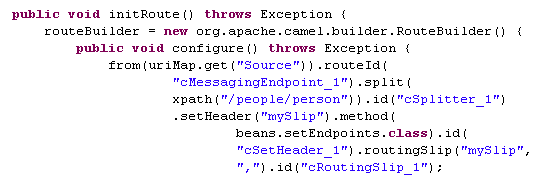
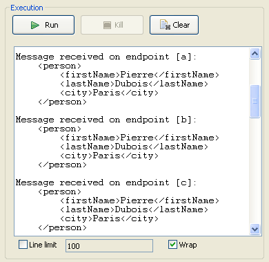

|
Famille de composant |
Routing | |
|
Fonction |
Le composant cRoutingSlip vous permet de router un ou des message(s) consécutivement via une série d'étapes de traitement, avec une séquence d'étapes inconnues lors de la création et variable pour chaque message. | |
|
Objectif |
Le cRoutingSlip est utilisé pour router consécutivement un ou des message(s) vers une série d'endpoints. | |
|
Basic settings |
Header name |
Saisissez le nom de l'en-tête du message comme défini dans le composant précédent, cSetHeader, mySlip par défaut. L'en-tête doit comporter une liste d'URIs d'endpoint vers lesquelles vous souhaitez router vos messages. |
| URI delimiter | Saisissez le délimiteur utilisé pour séparer différentes URIs d'endpoint contenues dans l'en-tête du message, virgule (,) par défaut. | |
|
Utilisation |
Le cRoutingSlip est utilisé comme composant intermédiaire ou composant de fin dans une sous-route. Il suit toujours un cSetHeader, qui définit un en-tête pour chaque message comprenant une liste d'URIs d'endpoints. | |
|
Limitation |
n/a | |
Dans ce scénario, des messages d'un système de fichiers sont routés après une série d'endpoints, selon les URIs comprises dans l'en-tête du message.
Ce scénario nécessite un composant cFile en tant qu'émetteur de message, un cSetHeader pour définir une série d'endpoints, un cRoutingSlip pour router consécutivement des messages vers des endpoints, trois cMessagingEndpoint pour récupérer les messages routés vers les endpoints et trois composants cProcessor afin de monitorer les messages routés vers les endpoints de messaging connectés.
Dans la Palette, développez le dossier Messaging, déposez un cFile et trois cMessagingEndpoint dans l'espace de modélisation graphique et renommez-les comme ci-dessus, afin de mieux identifier leur rôle dans la Route.
De la famille Transformation, déposez un composant cSetHeader dans l'espace de modélisation graphique et renommez-le afin de mieux identifier son rôle dans la Route.
De la famille Routing, déposez un cRoutingSlip dans l'espace de modélisation graphique et renommez-le pour mieux identifier son rôle.
De la famille Processor, déposez trois cProcessor dans l'espace de modélisation graphique et renommez-les pour mieux identifier leur rôle au sein de la Route.
Cliquez-droit sur le composant cFile, sélectionnez Row > Route dans le menu contextuel et cliquez sur le composant cSetHeader.
Cliquez-droit sur le cSetHeader, sélectionnez Row > Route dans le menu contextuel et cliquez sur le composant cRoutingSlip.
Répétez cette opération pour connecter les cMessagingEndpoint aux composants cProcessor correspondants.
Double-cliquez sur le composant cFile nommé Sender pour afficher sa vue Basic settings.
Dans le champ Path, saisissez le chemin d'accès au dossier contenant les fichiers source Beijing.xml, London.xml, Paris.xml et Washington.xml, ou parcourez votre système jusqu'à ce dossier.
Dans la liste Encoding, sélectionnez le type d'encodage de vos fichiers source. Laissez les autres paramètres tels qu'ils sont.
Double-cliquez sur le composant cSetHeader nommé Set_endpoints pour afficher sa vue Basic settings.
Cliquez sur [+] pour ajouter une ligne au tableau Headers.
Dans le champ Name, saisissez le nom de l'en-tête que vous souhaitez ajouter à chaque message.
Dans ce scénario, utilisez simplement mySlip, la valeur par défaut du champ Header name, dans le composant cRoutingSlip.
Dans la liste Language, sélectionnez Constant ou Simple et, dans le champ Value, saisissez les URIs vers lesquelles vous souhaitez que les messages soient routés de manière séquentielle, séparées par une virgule, la valeur par défaut du champ URI delimiter, dans le composant cRoutingSlip.
Dans ce scénario, le message doit être routé d'abord vers l'endpoint c, puis à l'endpoint a et finalement à l'endpoint b.
Double-cliquez sur le composant cRoutingSlip nommé Routing_slip pour afficher sa vue Basic settings dans l'onglet Component et définir l'en-tête du message dans le champ Header name ainsi que le délimiteur d'URIs, dans le champ URI delimiter.
Dans ce scénario, utilisez les paramètres par défaut.
Double-cliquez sur le composant cMessagingEndpoint nommé Endpoint_a pour afficher sa vue Basic settings et saisissez l'URI de destination de vos messages dans le champ URI.
Utilisez ce composant pour récupérer le message routé vers l'URI direct:a.
Répétez cette étape pour configurer les URIs des endpoint dans les autres composants cMessagingEndpoint : direct:b et direct:c respectivement.
Double-cliquez sur le composant cProcessor nommé Monitor_a pour afficher sa vue Basic settings dans l'onglet Component et personnalisez le code afin que la console affiche les informations comme vous le souhaitez.
Utilisez ce composant pour monitorer les messages routés vers l'endpoint connecté a et afficher le nom de fichier, personnalisez donc le code comme suit :
System.out.println("Message received on endpoint a: "+ exchange.getIn().getHeader("CamelFileName"));Répétez cette étape pour personnaliser le code des deux autres cProcessor, pour les messages routés vers les endpoints connectés b et c respectivement.
System.out.println("Message received on endpoint b: "+ exchange.getIn().getHeader("CamelFileName"));System.out.println("Message received on endpoint c: "+ exchange.getIn().getHeader("CamelFileName"));Appuye sur Ctrl+S pour sauvegarder votre Route.
Cliquez sur l'onglet Code au bas de l'espace de modélisation graphique pour visualiser le code généré.
Dans ce morceau de code, les messages provenant de l'émetteur reçoivent un en-tête ajouté par la méthode
.setHeadercomportant une liste d'URIs ("direct:c,direct:a,direct:b") et sont routés vers lecRoutingSlip_1.Cliquez sur la vue Run pour l'afficher et cliquez sur le bouton Run pour lancer l'exécution de votre Route.
Vous pouvez également appuyer sur F6 pour l'exécuter.
Résultat : Les messages source sont routés consécutivement vers les endpoints définis : c, a puis b.
Dans ce scénario, basé sur le précédent, chaque message d'un système de fichier est routé consécutivement vers différents endpoints selon le nom de la ville qu'il contient.
Tous les fichiers utilisés dans ce scénario sont nommés d'après le nom de la ville qu'ils contiennent. Voici des extraits de deux exemples :
Beijing.xml :
<person>
<firstName>Nicolas</firstName>
<lastName>Yang</lastName>
<city>Beijing</city>
</person>
Paris.xml :
<person> <firstName>Pierre</firstName> <lastName>Dupont</lastName> <city>Paris</city> </person>
Un Bean Java prédéfini, setEndpoints, est appelé dans ce scénario pour retourner des URIs d'endpoints selon le nom de la ville contenu dans chaque message, afin que les messages soient routés comme suit :
Le message contenant le nom de la ville de Paris sera d'abord routé vers l'endpoint a, puis vers l'endpoint b et finalement vers l'endpoint c.
Le message contenant le nom de la ville de Beijing sera d'abord routé vers l'endpoint c puis vers l'endpoint a et finalement vers l'endpoint b.
Les autres messages seront routés vers l'endpoint b puis vers l'endpoint c.
Pour plus d'informations concernant la création et l'utilisation de Beans Java, consultez le Guide utilisateur de Talend Open Studio for ESB.
package beans;
import org.w3c.dom.Document;
import org.w3c.dom.Element;
import org.w3c.dom.NodeList;
public class setEndpoints {
public String helloExample(Document document) {
NodeList cities = document.getDocumentElement().getElementsByTagName(
"city");
Element city = (Element) cities.item(0);
String textContent = city.getTextContent();
if ("Paris".equals(textContent)) {
return "direct:a,direct:b,direct:c";
} else if ("Beijing".equals(textContent)) {
return "direct:c,direct:a,direct:b";
} else
return "direct:b,direct:c";
}
}
Dans ce scénario, réutilisez la Route configurée dans le scénario précédent, sans ajouter ou supprimer de composant et sans modifier de connexion.
Dans ce scénario, configurez le composant cSetHeader pour appeler le Bean Java prédéfini et laissez les paramètres des autres composants tels qu'ils sont dans le scénario précédent.
Double-cliquez sur le composant cSetHeader pour afficher sa vue Basic settings.
Sélectionnez Bean dans la liste Language et, dans le champ Value, spécifiez le Bean Java retournant les URIs des endpoints. Dans ce scénario, saisissez
beans.setEndpoints.Appuyez sur Ctrl+S pour sauvegarder votre Route.
Cliquez sur l'onglet Code au bas de l'espace de modélisation graphique afin de visualiser le code généré.
Dans ce morceau de code, les messages provenant de l'émetteur reçoivent un en-tête ajouté par la méthode
.setHeadercomportant une liste d'URIs retournées par la classebeans.setEndpoints.class, puis routées vers lecRoutingSlip_1.Cliquez sur la vue Run pour l'afficher et cliquez sur le bouton Run pour lancer l'exécution de votre Route.
Vous pouvez également appuyez sur F6 pour l'exécuter.
Résultat : Les sources sont routées consécutivement vers les endpoints définis : le message contenant le nom de la ville de Beijing est d'abord routé vers l'endpoint c, puis vers l'endpoint a et finalement vers l'endpoint b ; le message contenant le nom de la ville de Paris est routé d'abord vers l'endpoint a, puis vers l'endpoint b et finalement vers l'endpoint c. Les autres messages sont routés vers l'endpoint b puis vers l'endpoint c.